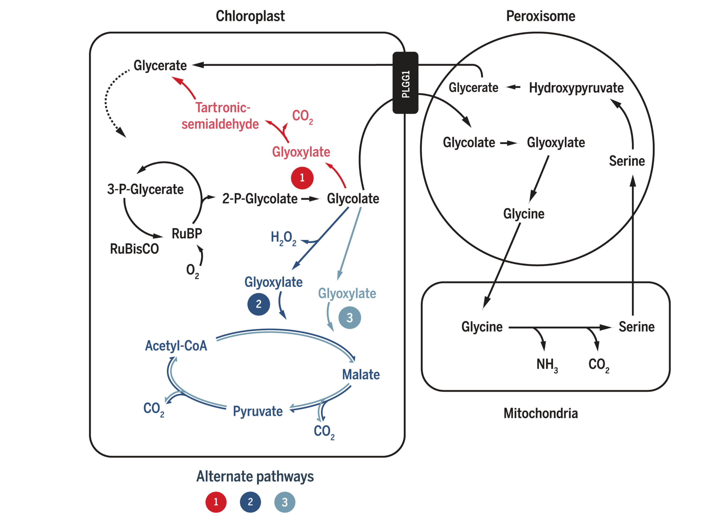
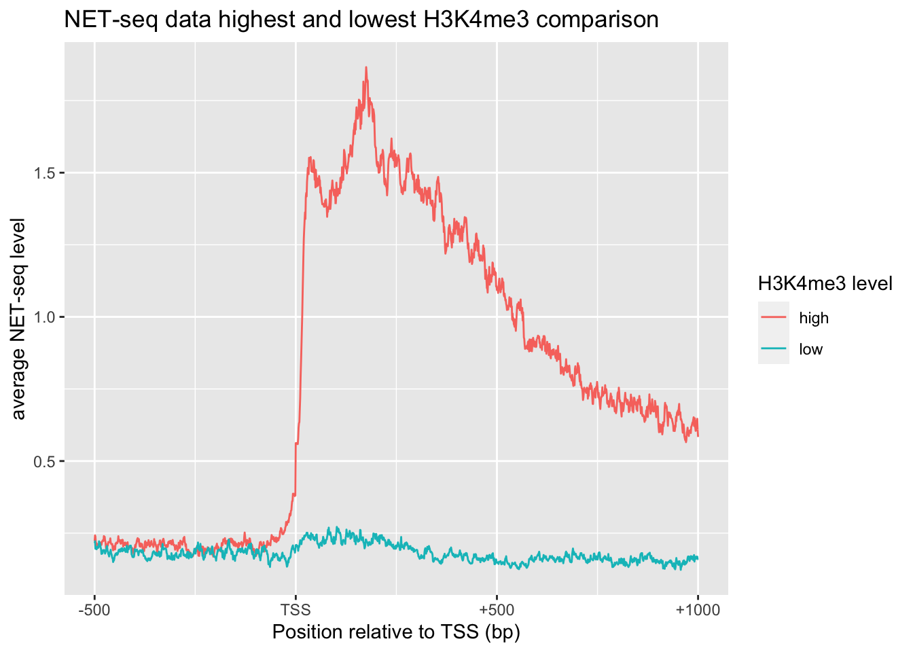

2020
Presentation see here
Geigenberger, Peter, Ina Thormählen, Danilo M. Daloso, and Alisdair R. Fernie. 2017. “The Unprecedented Versatility of the Plant Thioredoxin System.” Trends in Plant Science 22 (3): 249–62. https://doi.org/https://doi.org/10.1016/j.tplants.2016.12.008.
Hägglund, Per, Christine Finnie, Hiroyuki Yano, Azar Shahpiri, Bob B. Buchanan, Anette Henriksen, and Birte Svensson. 2016. “Seed Thioredoxin h.” Biochimica Et Biophysica Acta (BBA) - Proteins and Proteomics 1864 (8): 974–82. https://doi.org/https://doi.org/10.1016/j.bbapap.2016.02.014.
Discuss the feasibility and desirability of improving photosynthesis in higher plants through the use of photorespiratory bypasses.
Plants and algae use the Calvin cycle to capture inorganic carbon (as CO2) and use ATP and NADPH generated in light reactions to convert it to organic carbon. This process, known as photosynthesis, is the predominant way to replenish organic carbon in the biosphere, and is the basis for human food production. Despite its crucial role, the key enzyme in the pathway that attaches the inorganic CO2 to the organic sugar 1,5-bisphosphate (RuBP), called Rubisco, is not efficient, in that it can also use O2 instead of CO2 as the substrate, which leads to production of one molecule each of 3-PGA and 2-phosphoglycerate (2-PG). Plants use a pathway known as photorespiration to remove the toxic 2-PG and to salvage some (75%) carbon lost from the Calvin cycle by converting two 2-PG to one 3-PGA while releasing CO2 (Figure 0.1 ). Photorespiration is one of the major factors contributing to inefficiency of photosynthesis because 1) much CO2 released in mitochondria is escaped into the atmosphere and not re-assimilated in the Calvin cycle, resulting in the reduction of the amount of Calvin cycle intermediates; 2) O2 directly competes with CO2 for Rubisco reaction (in ambient atmosphere and at 25oC, 25% of the Rubisco reactions in an average C3 plant uses O2); 3) in photorespiration, ammonia is released and needs to be reassimilated at the expense of one molecule of ATP and two reducing equivalents (reduced ferredoxins) per molecule of ammonia; 4) reducing power is dissipated in the oxidation of glycolate using molecular oxygen; 5) ATP is also consumed for phosphorylating glycerate in the final step in the photorespiration pathway (because the phosphate group on 2-PG is removed by phosphatase and is thus not conserved). The total direct energy cost for converting two 2PG to one 3PGA is 3.5 ATP and 2 NADPH. The rate of photorespiration is increased by the ratio of O2 concentration to CO2 concentration experienced by Rubisco (in C3 plants, this is similar to atmospheric ratio), and is thus increased by high temperature, as solubulity of CO2 decreases faster than does O2 with increasing temperature.

Figure 0.1: The native photorespiration pathway.
Several groups of photosynthetic organisms independently evolved strategies to minimise photorespiration and are thus able to grow in hot and/or CO2-deficient conditions. For example, C4 and CAM plants uses PEP carboxylase, which uses \(HCO_3^-\) instead of CO2 as the substrate, to perform an initial carboxylation, which results in production of 4-carbon malate/oxaloacetate that is later used to release CO2 for Rubisco reaction. The initial carboxylation and later decarboxylation is separated spatially in C4 plants and temporally in CAM plants. In aquatics environments where CO2 concentration is low, cyanobacteria and green algae uses bicarbonate pumps to actively increase intracellular CO2 (\(HCO_3^-\)) concentration, and their Rubisco is in close proximity with carbonic anhydrase, which converts \(HCO_3^-\) to CO2.
The vast majority of land plants (especially crops), however, adopts the C3 metabolism scheme, which means they do not actively concentrate CO2 and are susceptible to reduction of photosynthesis efficiency by photorespiration. Thus, it has been believed that reduction in photorespiration can improve photosynthesis and hence crop yield.
1 Attempts to Inhibit Photorespiration and Improve Specificity of Rubisco
Initial attempts to reduce the effect of photorespiration include inhibition, knock-down and knock-out of the enzymes involved in photorespiration. The relevant genes are identified by screening for mutants that have impaired photorespiratory function. However, most of such mutants exhibited chlorosis and stunted growth. The rationale is simple: reduction of photorespiratory enzyme activity not only does not reduce the production of 2-PG by Rubisco, but also causes the toxic molecules resulted from partial metabolism of 2-PG to accumulate. Also, it has been suggested that photorespiratory enzymes may be also involved in other pathways related to serine biosynthesis and nitrogen metabolism.
Researches that attempted for a Rubisco enzyme with a greater specificity for CO2 were also conducted. However, it was found that there is a inverse relationship between specificity and rate of reaction. As adaptations to achieve maximal rate of photosynthesis in different environments, Rubisco with high specificity and low turnover rate are typically found in C3 plants that grow under high temperature/low CO2, and Rubisco with high turnover and low specificity are generally found in C3 plants that grow under lower temperature, as well as in organisms with a CO2-concentrating mechanism (C4/CAM/algae/cyanobacteria).
2 Bypassing Photorespiration
As attempts to improve Rubisco specificity and inhibit photorespiration directly both did not yield much outcome, photorespiratory bypasses becomes the new hotspot for improving photosynthesis. In general, photorespiratory bypasses are ‘designed photorespiratory pathways’ that aim to minimise energy comsumption and CO2 loss to the atmosphere. Successful bypasses usually involve confining photorespiration to less compartments (ideally in chloroplast only), preventing lost of reducing power via oxidase, preventing release of NH3, and reducing the number of steps of reactions.
2.1 Implementing The Bacterial Glycerate Pathway
Many bacteria possess a simple and efficient pathway for converting glyoxylate to glycerate. This pathway involves two steps: 1) condensation of two glyoxylate to tartronate semialdehyde (by glyoxylate carboxyligase (GCL)) while releasing CO2; 2) reduction of tartronate semialdehyde by tartronate semialdehyde reductase (requiring one NADH) to glycerate. Compared with the native photorespiratory pathway (which converts glyoxylate to glycine in peroxisome and decarboxylates glycine in the mitochondrion), NH3 release is prevented and, if this pathway can be implemented in the chloroplast, CO2 release is localised to the chloroplast and is more likely to be re-assimilated by Rubisco instead of escaping to the atmosphere.
To implement the pathway in the chloroplast, a targeting sequence (e.g. Arabidopsis Rubisco small subunit (RbcS) or phosphoglucomutase transit peptide sequence) needs to be added to the N terminus of the gene constructs of the desired enzymes. In addition, the enzyme(s) that converts glycolate to glyoxylate also need(s) to be imported to the chloroplast. In normal plants, this conversion is catalysed by glycolate oxidase in peroxisome, and the same enzyme can be targeted to the chloroplast. However, glycolate oxidase is inefficient, as it uses O2 as the hydrogen acceptor, which wastes reducing power. In addition, its reaction generates H2O2, which needs to be broken down by catalase. A more efficient bacterial enzyme, glycolate dehydrogenase (GDH), can be used to replace glycolate oxidase’s role. GDH uses NAD+ instead of O2 as the hydrogen acceptor, which prevents production of toxic H2O2 and preserves reducing power.
According to the scheme described above, Kebeish et al. (2007) generated plants transformed with five chloroplast-targeted bacterial genes encoding glycolate dehydrogenase, glyoxylate carboligase and tartronic semialdehyde reductase (Figure 2.1, 1). In these plants, some glycolate is successfully converted directly to glycerate in chloroplasts, and reduces, but not eliminate, flux of photorespiratory metabolites through peroxisomes and mitochondria. The transgenic plants grew faster, produced more shoot and root biomass, and the content of soluble sugars (fructose, glucose and sucrose) increases significantly.

Figure 2.1: Three photorespiratory bypasses. The loop represents the native pathway.
Carvalho et al. (n.d.) designed a similar photorespiratory bypass (Figure 2.1, 3). It also uses tartronate semialdehyde (TSA) as the intermediate and thus prevents NH3 production. However, the CO2-releasing TSA synthesis reaction occurs in the peroxisome rather than in the chloroplast and therefore this mechanism does not have the additional benefit of reducing CO2 loss. In the peroxisome, TSA is converted to hydroxypyruvate by hydroxypyruvate isomerase (HYI), and the rest is identical to the native pathway. Unfortunately, all plants fail to express HYI, and for those with GCL expressed, chlorosis and stunted growth are exhibited, similar to photorespiration mutants. (I think one statement regarding this piece of research at the end of page 808 of the review written by Weber and Bar-Even (2019) is not appropriate, as HYI was not even expressed)
Maier et al. (2012) used a completely different approach. Instead of taking shortcuts within the native photorespiratory pathway with 3-PGA being the final product, they introduced glycolate oxidase, catalase and malate synthase into the chloroplast, which, together with pyruvate dehydrogenase and malic enzyme which are natively present in the chloroplast, completely oxidise glycolate into two CO2 (Figure 2.1, 2), while producing NADPH and NADH. Although this pathway requires more energy than the native pathway to restore the ‘status quo ante’ according to the calculation (see Peterhansel, Blume, and Offermann (n.d.), Table 2), and is shown in computational modelling to result in a 31% decrease in photosynthetic efficiency compared to WT (Xin et al. 2015), experimental studies on Arabidopsiis thaliana surprisingly revealed an increase in biomass in these transgenic plants. A modified version of this approach carried out later on tobacco plants by South et al. (2019) were shown to be even more successful than Kebeish’s approach which was calculated to be the most energy-efficient. The success of Maier’s method may be explained by thhe fact that, in hot climates (where sunlight is intense), ATP and NADPH supply from light reactions is often not limiting, so an improved energy balance in photorespiration does not necessarily improve the rate of carbon fixation. Instead, the benefit brought about by the rapid CO2 generation in this bypass is more important. In addition, it is argued that the ‘wasteful’ dissipation of reducing power by glycolate oxidase may actually be beneficial in avoiding production of reactive oxygen species (ROS) in high light intensity, when the output of light reactions is in large excess. This also explains why higher plants prefer glycolate oxidase rather than glycolate dehydrogenase.
2.2 Inhibition of the Glycolate Transporter
In the two successful photorespiratory bypasses described above, glycolate metabolism inside chloroplast competes with its export via the glycolate exporter PLGG. Therefore, repression of this transporter is expected to increase the flux into the bypasses and thus further increase the efficiency. South et al. (2019) studied the effect of RNAi inhibition of PLGG1 in these two methods as well as a ‘combined’ scheme of the two. The constructs and mechanisms of action are shown in Figure 2.2. Both AP1 and AP3 (but not AP2) showed significant increase in dry weight biomass, by 13% and 18%, respectively. When the PLGG1 RNAi module is added, the benefit of AP1 is lost, while that of AP3 increases to 24% (Weber and Bar-Even (2019) implied, on page 808 when citing this work, that inhibition of PLGG always increases efficiency, which is not correct).

Figure 2.2: South’s (2019) three photorespiratory bypass constructs. AP1: five bacterial genes encoding glycolate dehydrogenase (GDH), glyoxylate carboligase and tartronic semialdehyde reductase (same as Kebeish (2007)); AP2: glycolate oxidase (GOX), malate synthase and catalase (CAT) (same as Maier (2012)); AP3: same as AP2, except that GOX+CAT is replaced by GDH.
Elimination of the AP1 enhancements by the PLGG1 RNAi module implies that this introduced pathway ‘may not have had sufficient kinetic capacity to handle the full glycolate flux under high rates of Rubisco oxygenation’, according to South et al. (2019). This is in accordance with the aforementioned statement that the efficiency of photorespiratory bypasses in accelerating carbon fixation does not depend on energy economy (conservation of ATP and NADPH), but instead on the rate of conversion of 2-PG into TCA cycle intermediates (CO2 and/or 3-PGA). That is to say, the real culprit for photorespiration-induced reduction in carbon fixation activity is not loss of energy in the form of ATP and NADPH, but is likely to be the inefficiency of removing 2-PG, as well as the low CO2:O2 ratio. Thus, in South’s AP3 construct where 2-PG is efficiently cleared up and CO2 is produced in a large amount, the most prominent increase in carbon fixation and biomass is observed.
3 Conclusion
Photorespiration has long been a target for improving photosynthesis and crop yield. Several photorespiratory bypasses, which provide alternative, more efficient pathways to complement or replace the native pathway, have proved successful for this goal in model plants. Much is yet to be known about the mechanisms by which these bypasses accelerates photosynthesis, but recent experiments suggests that, in contrast to the traditional view that photorespiration is energy-wasting and should be avoided, increasing the flux through the photorespiration pathway might instead speed up carbon fixation. Also, conclusion obtained from computational modelling should be viewed with care, at least in photorespiratory studies, as the seemingly sensible assumptions they make often results in significant deviations from the experimental results.
References
Carvalho, Josirley de F C, Pippa J Madgwick, Stephen J Powers, Alfred J Keys, Peter J Lea, and Martin A J Parry. n.d. “An Engineered Pathway for Glyoxylate Metabolism in Tobacco Plants Aimed to Avoid the Release of Ammonia in Photorespiration.” BMC Biotechnol 11. Embrapa Soybean, Londrina, Paraná, Brazil, Rodovia Carlos Strass, Distrito da Warta, Londrina PR, Brasil.: 111. https://doi.org/10.1186/1472-6750-11-111.
Kebeish, Rashad, Markus Niessen, Krishnaveni Thiruveedhi, Rafijul Bari, Heinz-Josef Hirsch, Ruben Rosenkranz, Norma Stäbler, Barbara Schönfeld, Fritz Kreuzaler, and Christoph Peterhänsel. 2007. “Chloroplastic Photorespiratory Bypass Increases Photosynthesis and Biomass Production in Arabidopsis Thaliana.” Nat Biotechnol 25 (5). RWTH Aachen, Institute of Biology I, Worringer Weg 1, 52056 Aachen, Germany.: 593–99. https://doi.org/10.1038/nbt1299.
Maier, Alexandra, Holger Fahnenstich, Susanne Von Caemmerer, Martin Engqvist, Andreas Weber, Ulf-Ingo Flügge, and Veronica Maurino. 2012. “Transgenic Introduction of a Glycolate Oxidative Cycle into a. Thaliana Chloroplasts Leads to Growth Improvement.” Frontiers in Plant Science 3: 38. https://doi.org/10.3389/fpls.2012.00038.
Peterhansel, Christoph, Christian Blume, and Sascha Offermann. n.d. “Photorespiratory Bypasses: How Can They Work?” J Exp Bot 64 (3). Leibniz University Hannover, Institute of Botany, Herrenhaeuser Straße 2, 30419 Hannover, Germany. cp@botanik.uni-hannover.de: 709–15. https://doi.org/10.1093/jxb/ers247.
South, Paul F, Amanda P Cavanagh, Helen W Liu, and Donald R Ort. 2019. “Synthetic Glycolate Metabolism Pathways Stimulate Crop Growth and Productivity in the Field.” Science 363 (6422). Global Change; Photosynthesis Research Unit, United States Department of Agriculture-Agricultural Research Service, Urbana, IL 61801, USA.; Carl R. Woese Institute for Genomic Biology, University of Illinois, Urbana, IL 61801, USA.; Carl R. Woese Institute for Genomic Biology, University of Illinois, Urbana, IL 61801, USA.; Department of Crop Sciences, University of Illinois, Urbana, IL 61801, USA.; Global Change; Photosynthesis Research Unit, United States Department of Agriculture-Agricultural Research Service, Urbana, IL 61801, USA. d-ort@illinois.edu.; Carl R. Woese Institute for Genomic Biology, University of Illinois, Urbana, IL 61801, USA.; Department of Crop Sciences, University of Illinois, Urbana, IL 61801, USA.; Department of Plant Biology, University of Illinois, Urbana, IL 61801, USA. https://doi.org/10.1126/science.aat9077.
Weber, Andreas P.M., and Arren Bar-Even. 2019. “Update: Improving the Efficiency of Photosynthetic Carbon Reactions.” Plant Physiology 179 (3). American Society of Plant Biologists: 803–12. https://doi.org/10.1104/pp.18.01521.
Xin, Chang-Peng, Danny Tholen, Vincent Devloo, and Xin-Guang Zhu. 2015. “The Benefits of Photorespiratory Bypasses: How Can They Work?” Plant Physiology 167 (2). American Society of Plant Biologists: 574–85. https://doi.org/10.1104/pp.114.248013.
1 Quiz 5
1.1 Heatmaps (using ggplot2 in R)
Loading Packages
library(R.matlab)## R.matlab v3.6.2 (2018-09-26) successfully loaded. See ?R.matlab for help.##
## Attaching package: 'R.matlab'## The following objects are masked from 'package:base':
##
## getOption, isOpenlibrary(reshape2)
library(tidyverse)## ── Attaching packages ─────────────────────────────────────── tidyverse 1.3.0 ──## ✓ ggplot2 3.3.2 ✓ purrr 0.3.4
## ✓ tibble 3.0.4 ✓ dplyr 1.0.2
## ✓ tidyr 1.1.2 ✓ stringr 1.4.0
## ✓ readr 1.4.0 ✓ forcats 0.5.0## ── Conflicts ────────────────────────────────────────── tidyverse_conflicts() ──
## x dplyr::filter() masks stats::filter()
## x dplyr::lag() masks stats::lag()Loading Data
setwd('/Users/tianyishi/Documents/GitHub/ox/content/lab/src/Y2T3W7-genomics')
H3K4me3 <- readMat('H3K4me3_ChIP_seq_glucose_gene_levels.mat')$H3K4me3.ChIP.seq.glucose.gene.levels
MNase <- readMat('MNase_seq_glucose_gene_levels.mat')$MNase.seq.glucose.gene.levels
NET <- readMat('NET_seq_glucose_gene_levels_sense_strand.mat')$NET.seq.glucose.gene.levels.sense.strand
NET[NET < -0.5 | NET > 5] = NAplot_heatmap <- function(mat, title) {
return(
mat %>%
melt() %>%
ggplot(aes(Var2, Var1, fill=value))+
geom_tile()+
scale_x_continuous(expand = c(0,0), breaks = c(1, 501, 1001, 1501), labels = c('-500', 'TSS', '+500', '+1000'))+
scale_y_continuous(expand = c(0,0))+
scale_fill_gradient(low="blue", high = "yellow")+
labs(title=title,
x='Position relative to TSS (bp)',
y='Gene number')
)
}plot_heatmap(H3K4me3, 'H3K4me3 ChIP-seq Glucose')
plot_heatmap(MNase, "MNase")
plot_heatmap(NET, 'NET')
1.2 Heatmaps in Python (with seaborn)
Plotting above heatmaps using ggplot2 in R is very slow. Using seaborn in Python is faster (plots not displayed):
from scipy.io import loadmat
import numpy as np
import matplotlib.pyplot as plt
import seaborn as sns
sns.set()
MNase = np.array(loadmat("MNase_seq_glucose_gene_levels.mat")["MNase_seq_glucose_gene_levels"])
H3K4me3 = np.array(loadmat("H3K4me3_ChIP_seq_glucose_gene_levels.mat")["H3K4me3_ChIP_seq_glucose_gene_levels"])
NET = readMat('NET_seq_glucose_gene_levels_sense_strand.mat')['NET_seq_glucose_gene_levels_sense_strand.mat']
def plot_heatmap(mat, title):
p = sns.heatmap(mat)
p.set(
title=title,
xlabel='Position relative to TSS (bp)', ylabel='Gene number',
xticks=[0, 500, 1000, 1500],
xticklabels=["-500", "TSS", "+500", "+1000"],
yticks=[0, 999, 1999, 2999, 3999, 4999],
yticklabels=[1, 1000, 2000, 3000, 4000, 5000],
)
return p
plot_heatmap(MNase, "MNase seq Glucose")
plt.show()
plot_heatmap(H3K4me3, 'H3K4me3 ChIP-seq Glucose')
plt.show()
plot_heatmap(NET, 'NET-seq Glucose sense strand')
plt.show()1.3 Average Gene Profile
xylabs <- labs(x='Position relative to TSS (bp)', y='average NET-seq level')
xaxis <- scale_x_continuous(breaks = c(0, 500, 1000, 1500), labels = c('-500', 'TSS', '+500', '+1000'))
# Average gene profile MNase-seq Glucose
tibble(x=0:1500, y=apply(MNase, 2, mean)) %>%
ggplot(aes(x, y))+
geom_line()+
xaxis+
xylabs+
labs(title='Average gene profile MNase-seq Glucose')
# NET-seq data highest and lowest H3K4me3 comparison
tibble() %>%
bind_rows(tibble(x=0:1500, y=apply(NET[1:501,], 2, function(x){mean(x, na.rm = TRUE)})) %>% add_column(`H3K4me3 level`='high')) %>%
bind_rows(tibble(x=0:1500, y=apply(NET[4501:5000,], 2, function(x){mean(x, na.rm = TRUE)})) %>% add_column(`H3K4me3 level`='low')) %>%
ggplot(aes(x, y, color=`H3K4me3 level`))+
geom_line()+
xylabs+xaxis+
labs(title='NET-seq data highest and lowest H3K4me3 comparison')
2 Quiz 8
2.1 Matlab
pos=yeast_gene_positions(:,[1,2,5])
% three colomns correspond to chromosome number, direction and TSS
avgs = []
i = 1
for p = pos.'
chr = NET_seq_data{p(1) + 16 * (1 - p(2))};
if p(2)==1
seq = chr(p(3):(p(3) + 299), :);
else
seq = chr((p(3) - 299):p(3), :);
end
avgs(i,:) = mean(seq);
i = i + 1;
end
corr(avgs,yeast_gene_measurements(:,1))2.2 Using R
setwd('/Users/tianyishi/Documents/GitHub/ox/content/lab/src/Y2T3W7-genomics')
pos <- readMat('yeast_gene_positions.mat')$yeast.gene.positions[,c(1,2,5)]
net <- lapply(readMat('NET_seq_genome_wide_data.mat')$NET.seq.data, as_vector)
clc <- apply(pos, 1, function(x){
mean(net[[x[1] + (1-x[2])*16]][x[3]:(x[3]+ifelse(x[2]==0, -1, 1)*299)])
})
exp <- readMat('yeast_gene_measurements.mat')$yeast.gene.measurements[,1]
plot(clc, exp)
cor(clc, exp)## [1] 0.8281284To what extent has genetic manipulation of the Calvin cycle forced the reappraisal of our understanding of the control of metabolic pathways in plants? What do studies of these transgenic plants reveal about the integration of metabolism?
1 Introduction
Genetic manipulation, particularly graded knock-down of enzymes in the Calvin cycle, has been exploited in the quest for understanding the control of the rate of carbon fixation step of photosynthesis. While initially it was thought that the flux of carbon fixation is limited by a few ‘regulated’ enzymes, with Rubisco being the most promising candidate, many unexpected experimental results revealed that, in reality, the flux of the Calvin cycle is influenced by multifarious factors, some of which are even due to other carbohydrate-unrelated pathways.
1.1 Rubisco Does not Exert Much Control on the Flux of the Calvin Cycle Unless in Special Conditions
Rubisco catalyses the carbon fixation step in the Calvin cycle and was initially widely thought to act as a control point on the rate of photosynthesis. Indeed, the enzymatic activity of Rubisco is modulated by a number of ways, such as activation by resersible carbamylation by CO2 and by Rubisco activase, and inhibition by a number of sugars resulting from Rubisco’s side reactions.
1 produced a series of tobacco plants (Nicotiana tabacum) that exhibit a range of reduced amounts of Rubisco by Agrobacterium-mediated transformation of plants with antisense mRNA to the gene for the small subunit of Rubisco (rbcS). Such ‘antisense’ plants were used by2 to examine the control exerted by Rubisco on the rate of photosynthesis. They found that in optimum enviornmental conditions the amount of Rubisco in a leaf could be reduced by more than one-third before any significant effect on the rate of photosynthesis, with \(C^J\) = 0.05-0.15 (very small). It was shown that reduction of enzyme amount is compensated for by an increase in Rubisco activation (from about 55% to almost 100%) due to 1) an increase of substrates (ribulose 1,5-bisphosphate and CO2) and decrease of products (3-phosphoglycerate), and 2) an increase of ATP/ADP ratio in the chloroplast stroma. Also, Rubisco is produced in large excess in WT plants, also explaining the lack of impact of its knock-down.
However, when plants were grown in low light and are then suddenly exposed to high light intensity, there was a near-proportional relation between the amount of Rubisco and the rate of photosynthesis3. A similar result can be obtained with low CO2 concentration. These experiments show that the contribution of Rubisco to the control of photosynthesis depends on both current and past conditions (CO2 concentration and light intensity).
2 Other Enzymes that Catalyse Irreversible Reactions
Apart from Rubisco, three other enzymes in the Calvin cycle catalyse irreversible reactions: (stromal) fructose 1,6-bisphosphatase (FBPase), sedoheptulose 1,7-bisphosphatase (SBPase) and phosphoribulokinase (PRK). These three enzymes are subjected to a same set of ‘fine’ regulatory mechanisms, all of which are exploited by the light reaction to activate the Calvin cycle:
- pH. These enzymes have a relatively sharp pH optimium at around 8.2.
- Mg2+ stimulation.
- Redox state. These enzymes are inactive when disulfide bridges form between certain cysteine residues, and are activated by (reduced) thioredoxin, which reduces these disulfide bonds.
Analysis of plant strains with each of these three enzymes knocked down reavealed that transformants with decreased SBPase activity show a significant but still non-proportional inhibition of photosynthesis4 in ambient conditions, while the effects of FBPase and PRK knock-down are marginal. Therefore, enzymes with similar regulatory properties does not indicate they have similar flux-control capabilities in a metabolic pathway.
3 Plastid Aldolase as an ‘Non-Regulated’ Enzyme Exerts a Greater Control than Rubisco on the Rate of Photosynthesis
In the Calvin cycle, aldolase carries out the synthesis of fructose 1,6-bisphohsphate (FBP) and sedoheptulose 1,7-bisphohsphate (SBP), both of which are close to equilibrium. Unlike the four enzymes described previously, aldolase’s activity is devoid of any regulatory properties and thus its rate is solely determined by the concentrations of substrates and products.
However, similar knock-down experiments targeting aldolase showed unexpected results, in that reduction in aldolase was found to significantly reduce the rate of photosynthesis5. A 30% decrease of aldolase activity in potato transformants led to a small (5–10%) inhibition of ambient photosynthesis, and reduction below 30% of the wild-type activity led to a severe inhibition. The experiment is repeated with different light intensities and CO2 concentrations, and it was found that the inhibition is smallest in low light and highest in high light and elevated CO2 (with \(C^J\) of about 0.18 and 0.56, respectively).
Decreased expression of aldolase inhibits photosynthesis for different reasons in low and high light. In low light, decreased expression of aldolase led to an accumulation of its substrate, triose phosphates and a depletion of of its product, which in turn causes the depletion of RuBP. In high light (plus elevated CO2), however, the triose phosphates remained very low, RuBP remained high, and PGA was higher in the transformants than in wild-type plants. This is because high irradiation inhibits starch synthesis and hence accumulation of phosphorylated intermediates, which leads to Pi-limitation, which in turn restricts ATP regeneration by the light reaction. The decreased ATP concentration thhen limits conversion of 3PGA to GAP, causing 3PGA to accumulate, which in turn results in product inibition of Rubisco. Of course, the two mechanisms are not mutually exclusive, and the relative importance of each vary gradually according to the light intensity.
It is important to note here that, to fully rationalise the difference in the effectiveness of inhibition of the Calvin cycle in different conditions, the effect of the conditions on other pathways (starch synthesis) in the metabolic network need also be considered.
4 Transketolase Directly Controls not Only Calvin Cycle but Also Other Pathways
Perturbation of the enzymes involved in the central carbohydrate metabolism pathways can directly influence the activity of other pathways. Transketolase is such an example.
In the Calvin cycle, transketolase catalyses the reactions 1) \(F6P + GAP \rightarrow E4P + X5P\) and 2) \(S7P + GAP \rightarrow X5P + R5P\), both of which are reactions close to equilibrium. Tobacco tranformant with decreased expression of plastid transketolase were also produced. Like aldolase, this ‘non-regulated’ enzyme also has a relatively high flux-control coefficient, especially in saturating light and CO2. As expected, loss of transketolase activity results in an increase in the amounts of its substrate (F6P) and decrease of its products, ultimately leading to a decrease of RuBP concentration. However, it was also observed that there was a significant decrease in the levels of aromatic amino acids, intermediates of the phenylpropanoid pathway, and secondary products such as chlorogenic acid and lignin. A plausible explanation for these observations is that the flux into the shikimic acid pathway (which synthesises aromatic pathways) is limited by the decreasing erythrose 4-phosphate (one product of transketolase) concentration.
The multiple consequences of reducing transketolase activity highlight the extent of integration within thhe central metabolic pathways and the potential difficulties in attepting to modify flux through a specific section of the metabolic network.
5 Conclusion
Genetic manipulation (mainly knock-outs) of some enzymes of the Calvin cycle qualitatively revealed some of the logic behind the regulation of (plant) metabolism in general: 1) loss of regulated enzymes such as Rubisco are compensated by increase in activity, 2) regulated enzymes are often produced in excess so that minor reduction in their amount does not affect the flux at all, 3) non-regulated enzymes such as aldolase are not produced in excess, and their loss restricts the flux more effectively, 4) the extent and the mechanisms of influence on Calvin cycle flux by reduction of an enzyme is affected by enviornmental conditions and the developmental history of the plant, 5) perturbation of a single reaction/enzyme can influence other, even distantly-related metabolic pathways, due to the plethora of interconnected components, 6) the flux through the Calvin cycle is determined by multiple enzymes.
Lots of effort has been made in modelling plant metabolism pathways such as the Calvin cycle (in order to ‘improve’ them), which proves extremely difficult. The Calvin cycle does not exist in isolation, so natually its flux is also influenced by other pathways in the complicated plant metabolism network, through shared intermediates/enzymes/regulatory molcules. Therefore, the precise prediction of its activity, in principle, also requires modelling of other, even distantly related pathways. However, it is impossible to presisely predict the behaviour of the entire metabolic network without knowing all the details (kinetic properties under different conditions, concentrations of enzymes and substrates, etc.) of every reaction in the network. Even if precise kinetic data of enzymes and concentrations of all substances can be obtained, further challenges will be encountered when considering in vivo modelling: unlike the test tube where all substances are relatively evenly distributed and there is only one single isolated compartment, the plant cells are extensively compartmentalised (many metabolic pathways take place in more than one compartments), and substances (substrate or enzymes) may not be evenly distributed and instead localise to specific regions of each compartment, thus altering the effective concentration. In addition, the effects of the internal and external enviornment (e.g. signalling molecules, light intensity) on gene expression of enzymes are also difficult to simulate.
References
1. Rodermel, S. R., Abbott, M. S. & Bogorad, L. Nuclear-organelle interactions: Nuclear antisense gene inhibits ribulose bisphosphate carboxylase enzyme levels in transformed tobacco plants. Cell 55, 673–681.
2. Quick, W. P. et al. Decreased ribulose-1,5-bisphosphate carboxylase-oxygenase in transgenic tobacco transformed with "antisense" rbcS : I. Impact on photosynthesis in ambient growth conditions. Planta 183, 542–554.
3. Quick, W. P. et al. Decreased ribulose-1,5-bisphosphate carboxylase-oxygenase in transgenic tobacco transformed with "antisense" rbcS : IV. Impact on photosynthesis in conditions of altered nitrogen supply. Planta 188, 522–531.
4. Harrison, E. P., Willingham, N. M., Lloyd, J. C. & Raines, C. A. Reduced sedoheptulose-1,7-bisphosphatase levels in transgenic tobacco lead to decreased photosynthetic capacity and altered carbohydrate accumulation. Planta 204, 27–36 (1997).
5. Haake, V., Zrenner, R., Sonnewald, U. & Stitt, M. A moderate decrease of plastid aldolase activity inhibits photosynthesis, alters the levels of sugars and starch, and inhibits growth of potato plants. The Plant Journal 14, 147–157 (1998).
Why do plants co-ordinate the relative activities of Photosystems I and II and how is this co-ordination achieved?
1 Background
Photosystems I and II are photochemical complexes that harvest light energy to drive endergonic redox reactions. Their operation in series (PS-II then PS-II), known as the Z scheme, results in generation of oxygen from water via photolysis, ATP production via electron transport chain (ETC) and production of NADPH (reduction of NADP+), which is essential for providing reducing power in anabolic reactions such as photosynthesis, by ferredoxin-NADP+ reductase. PS-I can also operate alone, resulting in cyclic photophosphorylation, generating ATP only.
Each photosystem exists on the thylakiod membrane (PS-II mainly in grana lamellae; PS-I mainly in stroma lamellae) as a multisubunit pigment-protein complex (or a dimer thereof, in the case of PS-II) comprising a reaction centre (RC) core containing a pair of chlorophyll a molecules, which is surrounded by other accessory proteins as well as variable number of antenna complexes ((trimers of) LHC-II/LHC-I; also known as chlorophyll a/b light-harvesting complex ) containing accessory pigments (e.g. chlorophylls and carotenoids) that pass light energy to the reaction centre via resonance energy transfer. The reaction centre in PS-II preferentially absorbs red light at wavelength 680 nm and is thus referred to as P680; the reaction centre in PS-I, known as P700, preferentially absorbs far-red light.
The activities of two types of photosystems is determined both by the external factors, i.e. intensity and wavelength of light, as well as the the intrinsic factors which can be regulated by the plant cells, namely the number of PS-II/PS-I cores and the antenna complexes (and hence the amount of accessory pigments) associated with them. Such regulation can affect the absolute activities of PS-II and PS-I as well as their activities relative to each other.
2 Why is Coordination between Photosystems I and II Needed
Because the PS-I and PS-II complexes are not physically coupled (so their abundance can differ) and their light absorption properties differ (PS-I prefers longer wavelength), their activities are not directly related and are often different. The activities of the two photosystems relative to each other can be regulated using the mechanisms described in Section 3, but before that, the benefits of this regulation are considered here:
- Stoichiometry adjustment. PS-II and PS-I activities should ideally be equal, in order to maximise the efficiency of light utilisation for production of NADPH in vectorised electron flow, which would otherwise be limited by the slower photosystem. There is a need for this kind of adjustment when there is a change in light quality. Upon illumination by far-red light that preferentially activates PS-I (PS-I light), PS-I activity is greater than PS-II, so PS-II activity shhould be improved relative to PS-I. Conversely, illumination by PS-II light leads to hyperactive PS-II, and its activity should be reduced relative to PS-II. These two states are referred to state 1 and 2, respectively, and state transition is the process by which the plant adjusts relative activity of PS-II and PS-I in response to a change in state.
- Protection against photoinhibition. If PS-II activity exceeds PS-I activity, the rate of production of reactive oxygen species (ROS) is increased. However, recent studies on stn7 mutants argue against this role. Photodamage of PS-II is unavoidable even under nomal conditions, and it is repaired efficiently in healthy plants.
- Meeting increased requirement for ATP. If PS-I activity exceeds PS-II activity, the excess activity in PS-I results in cyclic electron flow (CEF), generating additional ATP. Theoretically, this may be exploited by the plant to meet increased demand for ATP. However, recent work revealed that CEF is controlled by the redox power and is independent of state transition: state 2 is neither sufficient nor required to promote CEF (Takahashi et al. 2013).
The discussion below, therefore, focuses on the role of photosystem coordination in stoichiometry adjustment.
3 How is Coordination between PS-I and PS-II Achieved
3.1 The Role of the Plastoquinone Pool
The oxidative status of the plastoquinone (PQ) pool reflects the relative activity of PS-II and PS-I, and is involved in the signalling pathway of both short-term and long-term coordination (described in Section 3.2 and 3.3, respectively).
Upon illumination by PS-I light (in state 1), PS-I activity is greater than PS-II, leading to oxidation of the plastoquinone pool (most plastoquinone molecules are in the oxidised form, PQ). Conversely, the plastoquinone pool becomes reduced upon preferential excitation of PS-II (Figure 3.1).

Figure 3.1: Preferential activation of either PS-I or PS-II causes a shift in the oxidation state of the plastoquinone (PQ) pool.
3.2 Reversible Redistribution of LHC-II
LHC-II plays an important role in the coordination between PS-I and PS-II. The structure of one LHC-II protein has been determined by a combination of electron microscopy and X-ray crystallography (reviewed by Barros and Kühlbrandt (2009)). It contains three membrane-spaning \(\alpha\)-helices, and binds about 15 chlorophyll a and b molecules plus a few carotenoids. LHC-II complexes of different subtypes (of which Lhcb1, 2 and 3 are the most common) spontaneously assemble into trimers (can be heterogeneous), which then associate with PS-II and PS-I to increase the efficiency of their corresponding photochemical reaction.

Figure 3.2: Phosphorylation by STN7 causes conformational changes in LHC-II. Top: stroma; bottom: thylakoid lumen.
The LHC-II subtypes Lhcb1 and Lhcb2 (but not Lhcb3) can be phosphorylated by a specific protein kinase called STN7 (a.k.a. Stt7) at a threonine residue near the N-terminus (Mullet 1983). This happens during transition to state 2, when the STN7 kinase, which is associated with a specific region of the Rieske protein of the cytochrome b6f complex (Cytb6f), is activated upon binding of PQH2 to the Qo site of Cytb6f. Phosphorylation on LHC-II causes a conformational change (Figure 3.2), reduces its affinity to PS-II and increases its affinity to PS-I. The increase in affinity to PS-I is due to not only the conformational change, but also the tight association between the phosphate group and a specific arginine residue in PsaL, a protein that facilitates docking of LHC-II to PS-I core complex. As a result, LHC-II migrates from PS-II towards PS-I, thus enhancing efficiency of PS-I relative to PS-II (Figure 3.3). This is supported by the findings that plants without either STN7 (Bellafiore et al. 2005) or Lhcb1+Lhcb2 (Andersson et al. 2003) do not undergo state transitions. It was later shown by Longoni et al. (2015) that only Lhcb2 phosphorylation is relevant to state transition (Lhcb1 phosphorylation causes its exclusion from the complex). The N-terminal region of phosphorylated Lhcb2 interacts with PsaL, PsaH and PsaO proteins, and PsaO bridges PsaA (PSI reaction centre) and Lhcb2 through contacts within the membrane and on the stromal and luminal surface. PsaO is associated with two chlorophyll molecules which facilitates resonance energy transfer from LHC-II to PsaA.
The phosphorylation can be reversed by a specific kinase called TAP38 (a.k.a PPH1). When PS-I is over-excited relative to PS-II, STN7 is inactive, and TAP38 dephosphorylates LHC-II and causes them to return to PS-II (Figure 3.3).

Figure 3.3: Oxidative status of plastoquinone determines the phosphorylation state of LHC-II, which in turn regulates relative activity of PS-I and PS-II.
3.3 Transcriptional Regulation
Regulation of relative activity of PS-I and PS-II can also be achieved by controlling the amount of transcription of PS-I genes (e.g. psaA) and PS-II genes (psbA).
Puthiyaveetil et al. (2008) described a sensor kinase called chloroplast sensor kinase (CSK) that couples oxidation state of PQ to transcriptional control of psbA. As shown in Figure 3.4, PS-I light causes the PQ pool to be oxidised, and then CSK, which is activated by PQ (the PQ analogue, DBMIB (2,5-dibromo-3-methyl-5-isopropyl-p-benzoquinone) binds to CSK similarly), autophosphorylates itself, and then phosphorylates sigma factor 1 (SIG1) subunit of PEP (RNA polymerase). This results in specific repression of PS-I genes (psaA), thus decreasing the stoichiometry of PS-I to PS-I. Conversely, CSK is inactive with a reduced PQ pool under PS-II light, and SIG1 phosphatase removes the repression of PS-I gene transcription, thus increasing the stoichiometry of PS-I to PS-II.

Figure 3.4: Transcriptional control of PS-I genes mediated by PQ, CSK, SIG1 and PEP.
3.3.1 How does SIG1 phosphorylation confer phhotosystem promoter specificity?
Bacterial sigma factors contain the region 1.1 at the extreme N-terminus. Region 1.1 is a poorly-conserved, acidic region, which is associated with the positively charged catalytic cavity of RNA polymerase in the closed (non-transcribing) conformation. To begin transcription, (negatively-charged) DNA must replace region 1.1, and the efficiency of this replacement depends on how well the -10 and -35 elements of the promoter match the consensus sequence.
Chloroplast SIG1 also has an N-terminal un-conserved region (UCR), but it contains both acidic and basic patches. It is proposed that, in PS-II light, the basic patch and the acidic patch of the un-phosphorylated SIG1 form a complex through electrostatic interactions, thus preventing the association of the acidic patch with the basic catalytic cavity. In PS-I light, phosphorylation with the basic patch disfavours its complex formation with the acidic patches, thus allowing the acidic patch to associate with the catalytic cavity, where it acts as the gatekeeper and discriminates between strong and weak promoters.
By comparing the -35 and -10 regions of the promoters of psaA and psbA to the consensus sequence, it can be deduced that psbA (PS-II gene) has a stronger promoter and is therefore preferentially transcribed over PS-I under PS-I light, when SIG1 is phosphorylated and the discrimination mechanism is functioning.
4 Conclusion
Plants need to coordinate the efficiency of PS-II and PS-I in order to maximise the utilisation of light energy in linear electron flow. Upon change in light quality, activities of PS-II and PS-I are transiently unsyncronised, leading to change in oxidative state of PQ (i.e. accumulation of PQ or PQH2). This triggers two mechanisms used to regain the balance. First, PQH2 binding to Cytb6f activates STN7, which in turn causes phosphorylation of LHC-II and its migration from PS-II to PS-I. Second, PQ activates CSK, which phosphorylates SIG1, causing PS-II genes to be preferentially transcribed.
References
Andersson, Jenny, Mark Wentworth, Robin G Walters, Caroline A Howard, Alexander V Ruban, Peter Horton, and Stefan Jansson. 2003. “Absence of the Lhcb1 and Lhcb2 Proteins of the Light-Harvesting Complex of Photosystem Ii - Effects on Photosynthesis, Grana Stacking and Fitness.” Plant J 35 (3). UmeåPlant Science Centre, Department of Plant Physiology, UmeåUniversity, S-901 87 Umeå, Sweden. jenny.andersson@plantphys.umu.se: 350–61. https://doi.org/10.1046/j.1365-313x.2003.01811.x.
Barros, Tiago, and Werner Kühlbrandt. 2009. “Crystallisation, Structure and Function of Plant Light-Harvesting Complex Ii.” Biochimica et Biophysica Acta (BBA) - Bioenergetics 1787 (6): 753–72. https://doi.org/https://doi.org/10.1016/j.bbabio.2009.03.012.
Bellafiore, Stéphane, Frédy Barneche, Gilles Peltier, and Jean-David Rochaix. 2005. “State Transitions and Light Adaptation Require Chloroplast Thylakoid Protein Kinase Stn7.” Nature 433 (7028). Department of Molecular Biology, University of Geneva, 30, Quai Ernest Ansermet, 1211 Geneva, Switzerland.: 892–95. https://doi.org/10.1038/nature03286.
Buchanan, Bob B., Wilhelm Gruissem, and Russel L. Jones. 2015. Biochemistry & Molecular Biology of Plants. John Wiley & Sons.
Holloszy, John O., and Wendy M. Kohrt. 1996. “Regulation of Carbohydrate and Fat Metabolism During and After Exercise.” Annual Review of Nutrition 16 (1): 121–38. https://doi.org/10.1146/annurev.nu.16.070196.001005.
Horowitz, Jeffrey F, and Samuel Klein. 2000. “Lipid metabolism during endurance exercise.” The American Journal of Clinical Nutrition 72 (2): 558S–563S. https://doi.org/10.1093/ajcn/72.2.558S.
Jensen, Thomas E., and Erik A. Richter. 2012. “Regulation of Glucose and Glycogen Metabolism During and After Exercise.” The Journal of Physiology 590 (5): 1069–76. https://doi.org/10.1113/jphysiol.2011.224972.
Longoni, Paolo, Damien Douchi, Federica Cariti, Geoffrey Fucile, and Michel Goldschmidt-Clermont. 2015. “Phosphorylation of the Light-Harvesting Complex Ii Isoform Lhcb2 Is Central to State Transitions.” Plant Physiol 169 (4): 2874–83. https://doi.org/10.1104/pp.15.01498.
Maarbjerg, S. J., L. Sylow, and E. A. Richter. 2011. “Current Understanding of Increased Insulin Sensitivity After Exercise – Emerging Candidates.” Acta Physiologica 202 (3): 323–35. https://doi.org/10.1111/j.1748-1716.2011.02267.x.
Mittendorfer, Bettina, and Samuel Klein. 2003. “Physiological Factors That Regulate the Use of Endogenous Fat and Carbohydrate Fuels During Endurance Exercise.” Nutrition Research Reviews 16 (1). Cambridge University Press: 97–108. https://doi.org/10.1079/NRR200357.
Mullet, J E. 1983. “The Amino Acid Sequence of the Polypeptide Segment Which Regulates Membrane Adhesion (Grana Stacking) in Chloroplasts.” J Biol Chem 258 (16): 9941–8.
Puthiyaveetil, Sujith, T Anthony Kavanagh, Peter Cain, James A Sullivan, Christine A Newell, John C Gray, Colin Robinson, Mark van der Giezen, Matthew B Rogers, and John F Allen. 2008. “The Ancestral Symbiont Sensor Kinase Csk Links Photosynthesis with Gene Expression in Chloroplasts.” Proc Natl Acad Sci U S A 105 (29): 10061–6. https://doi.org/10.1073/pnas.0803928105.
Richter, Erik A., and Neil B. Ruderman. 2009. “AMPK and the biochemistry of exercise: implications for human health and disease.” Biochemical Journal 418 (2): 261–75. https://doi.org/10.1042/BJ20082055.
Taiz, Lincoln, and Eduardo Zeiger. 2010. Plant Physiology. Sinauer Associates.
Takahashi, Hiroko, Sophie Clowez, Francis-André Wollman, Olivier Vallon, and Fabrice Rappaport. 2013. “Cyclic Electron Flow Is Redox-Controlled but Independent of State Transition.” Nat Commun 4. Institut de Biologie Physico-Chimique, UMR 7141 CNRS-UPMC, 13 rue P et M Curie, 75005 Paris, France.: 1954. https://doi.org/10.1038/ncomms2954.
Thompson, Dylan, Fredrik Karpe, Max Lafontan, and Keith Frayn. 2012. “Physical Activity and Exercise in the Regulation of Human Adipose Tissue Physiology.” Physiological Reviews 92 (1): 157–91. https://doi.org/10.1152/physrev.00012.2011.
What effects do the intensity and duration of exercise have on fuel selection by mammalian muscle?
1 Introduction
During exercise, glucose and fatty acids are the fuels used by the muscle. Their origin and relative contribution depend on the intensity and duration of exercise, as well as on characteristics of individuals such as the level of physical training.
2 Overview
As shown in Figure 1, muscle contraction during exercise is powered by oxidation of glucose and fatty acids derived from a number of sources.

Figure 2.1: Sources of fuel during exercise. (1) white adipose tissue lipolysis; (2) intramuscular triglycerides (IMTG); (3) plasma TG (mainly contained in VLDL synthesised by the liver); (4) mucle glycogenolysis; blood glucose derived from liver glycogenolysis (5) and gluconeogenesis (6).
Immediately after the onset of exercise (0-30 s) energy is derived predominantly from anaerobic respiration. After this period, both excercise intensity and duration determine the choice of fuel used for oxidation. As shown in Figure 2, during the first 30 minutes of a low-intensity exercise bout, the vast majority of fuel used by muscle is plasma NEFA (non-esterified fatty acids) originated from adipose lipolysis with tiny contributions from IMTG (intramuscular triglyceride) and plasma glucose. For moderately intense exercise, the contribution from fat is lower: plasma NEFA and IMTG each represent about 25% of total energy expenditure, and glycogen and plasma glucose account for the remaining 40% and 10%. For high-intensity exercise, the contribution from muscle glycogen is even higher (60%), and fat and glucose represents 30% and 10% of the total, respectively. Overall, as exercise intensity increases, carbohydrates (especially muscle glycogen) progressively becomes the preferred fuel over triglyceride-derived fuel. As for TG-derived fuel, the ratio of IMTG to plasma NEFA is greatest during moderately intense exercise and lowest during low-intensity excercise. These are explained in detail later.
Figure 2 also shows that, during prolonged (low- or moderate-intensity) exercise, the contribution from plasma NEFA increases and the contribution from other fuels decreases, regardless of exercise intensity. This is due to the large amount of TG reserve in adipose tissue and the gradual depletion of other fuels.

Figure 2.2: Effects of exercise intensity and duration on choice of substrates. ‘Percentage of VO2max’, where VO2max is the highest rate of ATP generation via oxidative phosphorylation attainable, is a normalised parameter used to measure relative exercise intensity. Exercise requiring less than 30% VO2max is considered low-intensity; 50%-70%, moderate intensity; 70-85%, high-intensity.
2.1 Glycogen and Glucose
2.1.1 Blood Glucose
During exercise, catecholamines stimulates pancreatic \(\alpha\) cells to secrete glucagon, which in turn promtotes hepatic glycogenolysis and gluconeogenesis. Both processes release glucose into the bloodstream.
Blood glucose is the predominant source of carbohydrate for oxidation in muscle. Its absolute amount of usage increases as excercise intensity increases (though proportionally remains largely unchanged), which is mediated by an increaed sensitivity to insulin (in part due to utilisation of IMTG) and thus increased translocation of GLUT4 to the cell surface membrane.
2.1.2 Regulation of Glycogenolysis
Glycogen phosphorylase (GP) and phosphorylase kinase (PhK) are central to the regulation of glycogenolysis. Activated PhK phosphorylates GP, thus converting it from the inactive b form to the active a form. GP in its a form then phosphorolyses glycogen, releasing glucose 1-phosphase available for oxidation.
PhK is activated (1) by phosphorylation on \(\alpha\) and \(\beta\) subunits by PKA and (2) by binding of Ca2+ to \(\delta\) subunit. PKA is activated upon catecholamine (mostly adrenaline) binding to cell surface receptors (via Gs, adenylyl cyclase, and cAMP), and Ca2+ is released upon muscle contraction (stimulated by acetylcholine).
Ca2+ released upon muscle contraction results in a burst of glycogenolysis. The large amount of glycogen breakdown exceeds muscle’s energy requirement and capacity of TCA cycle, resulting in accumulation of lactate. This probably explains the short period of anaerobic respiration at the onset of exercise. After a few minutes, the activation of phosphorylase reverses by a mechanism that is not fully understood.
Myocytes also respond, via \(\beta\) adrenergic receptors, to catecholamines that are produced proportionally to exercise intensity. This results in activation of PKA (via Gs, AC and cAMP), which in turn activates glycogenolysis.
The rate of glycogenolysis also depends on availability of Pi, the substrate of glycogen phosphorylase. At rest and during mild exercise, fatty acid oxidation is capable of generating sufficient ATP, resulting in low Pi concentration. Availability of Pi increases as exercise intensity increases because the rate of ATP hydrolysis exceeds the rate of convertion from ADP and Pi back to ATP by oxidation of fatty acids (and plasma glucose).
2.2 Fatty Acids
During exercise, the usage of fatty acids has an important role of delaying the onset of glycogen depletion and hypoglycemia. Its contribution to total energy expenditure increases as excercise proceeds. However, its usage is limited during strenuous exercise.
2.2.1 Adipose Tissue Lipolysis and Plasma NEFA
Compared to resting conditions, adipose tissue lipolysis occurs at a higher rate during mild- or moderate-intensity exercise. This is mainly mediated by increased \(\beta\)-adrenergic receptor activation by catecholamines released by the adrenal gland upon sympathetic nerve stimulation. Exercise also increases blood flow in adipose tissue (which prevents toxic regional accumulation of fatty acids) and in muscle, thus promoting transport of NEFA to myocytes. Passive uptake of NEFA by myocytes, which is proportional to plasma NEFA concentration, is thus increased. AMPK, which is activated upon transition from rest to exercise and during prolonged exercise, phosphorylates ACC2 and malonyl-CoA decarboxylase, inhibiting the former and activating the latter, thus resulting in a decrease of malonyl-CoA concentration and hence releasing CPT-1 from inhibition. This promotes transport of fatty acids into mitochondria for \(\beta\)-oxidation in muscle cells.
As the exercise intensity continue to increase, however, oxidation of NEFA derived from adipose tissue lipolysis in muscle decreases. This is in part caused by decreased rate of lipolysis due to lactate (through activation of an orphan GPCR, GPR81). Lactate can also increase re-esterification of fatty acids to TG in the liver. Raising plasma fatty acid concentrations by intravenously infusing a lipid emulsion and heparin during the exercise bout increases plasma NEFA oxidation by about 30% but does not completely restore it to the rate observed during moderate-intensity exercise. Thus, high-intensity exercise also decreases the capacity of skeletal muscle to oxidise fatty acids, which is in part caused by increased glycogen catabolism. As more acetyl-CoA concentration are produced via glycogen catabolism, they are converted to malonyl-CoA by ACC2 located on the outer mitochondrial membrane, and the malonyl-CoA then inhibits CPT-1 and hence fatty acid oxidation.
2.2.2 Intramuscular Triacylglycerol (IMTG)
Within myocytes, there are lipid droplets that stores TG. Their usage during exercise can be calculated by subtracting plasma fatty acid oxidation (determined by isotope tracers) from whole-body fat oxidation (determined by indirect calorimetry).
IMTG use is stimulated by catecholamines via \(\beta\) adrenergic receptors. This is supported by the finding that pharmarcological blockage of \(\beta_1 + \beta_2\) prevents the usage of IMTG.
2.2.3 Plasma TG (VLDL-TG)
The liver takes up plasma NEFA and glycerol and use some of them to resynthesise TG. These TG are packaged in VLDL and released into the bloodstream. Muscle can break down some VLDL by lipoprotein lipase and oxidise the resulting fatty acids. However, this only contributes to a small fraction of energy usage during exercise and might be more important for replenishing IMTG stores after exercise.
How does insulin regulate the pathways for the conversion of body fat into ketone bodies? Why are ketone bodies overproduced in uncontrolled diabetes and what are the metabolic consequences.
1 Introduction
Production of ketone bodies (ketogenesis) occurs in the liver (and the kidneys) as an response to prevent hypoglycemia during starvation, and this process is normally suppressed and stimulated by insulin and glucagon, respectively. In addition to its physiological role in fasting, ketogenesis also has high activity in diabetes patients, which may lead to the potentially lethal condition called diabetic ketoacidosis.
2 Regulation of Ketogenesis by Insulin
Insulin suppresses ketogenesis by several mechanisms.
The steps of ketogenesis are breifly shown in Figure 2.1. There are three control points by which ketogenesis can be regulated by insulin: (1) adipocyte lipolysis, (2) mitochondrial fatty acid entry in ketogenic cells (mainly hepatocytes), (3) channeling of Acetyl-CoA (AcCoA) into the ketogenic pathway, and (4) mitochondrial 3-hydroxy-3-methylglutaryl-CoA synthase (HMG-CoA synthase).

Figure 2.1: Production of ketone bodies from adipose-derived fatty acids.
2.1 Adipocyte Lipolysis
The major source molecules for ketogenesis are fatty acids obtained via lipolysis in white adipose tissues. Lipolysis involves the sequential hydrolysis of triacylglycerol (TAG) into 3 non-esterified fatty acids (NEFA) and glycerol by adipocyte triglyceride lipase (ATGL), hormone-sensitive lipase (HSL) and monoglyceride lipase (MGL). Activation of ATGL and HSL are dependent on PKA, which is activated by cAMP that are produced when catecholamines bind to cell-surface \(\beta\) adrenergic receptors.
Insulin is a potent inhibitor of lipolysis. It activates PKB via IRS and PI3K, and PKB in turn phosphorylates and activates phosphodiesterase 3B (PDE-3B). PDB-3B decyclises cAMP, thus diminishing PKA, and thus lipolytic, activity (Figure 2.2). During starvation, insulin levels are low, and adipocyte lipolysis is released from inhibition. Adipocytes are then able to release NEFA into bloodstream.

Figure 2.2: Left, regulation of lipolysis by insulin in adipocytes; right, regulation of uptake of long-chain fatty acids into mitochondria by insulin.
2.2 Regulation of CPT1
Once NEFA molecules arrive at hepatocytes, they are first broken down into AcCoA via \(\beta\)-oxidation before conversion into ketone bodies. Long chain fatty acids needs the carnitine shuttle to enter mitochondria where \(\beta\)-oxidation takes place, and thus the first enzyme of this shuttling system, carnitine palmitoyl transferase 1 (CPT1) is the rate limiting step and is under control. CPT1 is inhibited by malonyl CoA, which is the lipogenetic precursor produced by acetyl-CoA carboxylase (ACC). Insulin activates protein phosphotase 2A (PP2A, which is also activated by xylulose 5-phosphate during fed state), which dephosphorylates and activates ACC, thus promoting lipogenesis and suppressing \(\beta\)-oxidation and ketogenesis (Figure 2.2).
During starvation when insulin levels are low, the high fatty acid concentration in hepatocytes activates the transcription factor PPAR\(\alpha\) (activated by direct binding of fatty acids to PPAR\(\alpha\)), which in turn promotes transcription of several enzymes involved in lipid catabolism, including CPT1.
2.3 Channeling of Acetyl-CoA into Ketogenesis
AcCoA produced from NEFA via \(\beta\)-oxidation can either enter the Krebs cycle or the ketogenesis pathway. When the rate of production of AcCoA exceeds the capacity of citrate synthesis (when there is insufficient oxaloacetate), the surplus becomes the substrate for ketogenesis. This situation occurs during starvation, when insulin levels are low and glucagon levels are high, and gluconeogenesis active. Glucagon has several mechanisms to promote gluconeogenesis (and suppress glycolysis). For example, it activates PKA, which in turn activates the transcription factor CREB, which promotes transcription of gluconeogenenic enzymes such as PEP carboxykinase and glucose 6-phosphatase. Insulin, on the contary, suppresses gluconeogenesis. For instance, it activates PKB, which in turn phosphorylates and thus inactivates FOXO1, which is a transcription factor that promotes the transcription of a similar set of gluconeogenic enzymes. Insulin inhibits gluconeogenesis and thus ketogenesis.
2.4 Mitochondrial HMG-CoA Synthase
Mitochondrial HMG-CoA catalyses the irreversible step in ketogenesis, and therefore is a site of control.
Insulin promotes glycolysis and increases flux through the Krebs cycle. One of the Krebs cycle intermediate, succinyl-CoA, inactivates mitochondrial HMG-CoA by succinylation. Glucagon, on the contrary, activates gluconeogenesis, which causes depletion of Krebs cycle intermediates including succinyl-CoA, thus activating ketogenesis.
In addition, the transcription factor PPAR\(\alpha\) described previously also activates transcription of HMG-CoA synthase.
3 Diabetes and Ketone Bodies
3.1 Aetiology of Diabetes
Diabetes is characterised by insufficient insulin activity, which could be caused by either lack of insulin production or insulin resistance in target cells. Most diabetes cases fall into two categories, type 1 and type 2.
- Type 1 diabetes is caused by autoimmunity agaist pancreatic \(\beta\) cells, which leads to their death and inadequacy of insulin. The primary risk factor for type 1 diabetes is genetic, although several environmental risk factors, such as infection by viruses that show tropism to pancreatic islets.
- Type 2 diabetes begins with insulin resistance, but reduction of insulin production and number of \(\beta\) cells may also be implicated as the disease advances. Type 2 diabetes also has genetic risk factors, but environmental factors, such as sedentarity and obesity, are more important.
Whichever the type, ketogenesis is hyperactive in diabetes patients (although generally more severe in type 1) due to inadequate insulin activity.
3.2 Overproduction of Ketone Bodies
Given the fact that insulin suppresses ketogenesis and insulin activity is decreased in diabetic patients, it is easy to comprehend why ketone bodies are overproduced in diabetic individuals.
Lack of insulin activity upon adipocytes leads to uncontrolled lipolysis and subsequent release of non-esterified fatty acids. As fatty acids enter the liver, they are shuttled into mitochondria, broken down into acetyl-CoA via \(\beta\)-oxidation and converted to ketone bodies. This process is facilitated by the low insulin activity, which activates gluconeogenesis (e.g. via FOXO1-induced transcription of gluconeogenenic enzymes and phosphorylation of PFK2/FBPase2 bifunctional enzyme), which in turn releases the rate-limiting enzyme, HMG-CoA from succinylation inhibition and reduces usage of acetyl-CoA in Krebs cycle. The low insulin activity also inhibits ACC, thus activating CPT1 and hence \(\beta\)-oxidation. The high fatty acid concentration also leads to activation of PPAR\(\alpha\), which promotes transcription of ketogenic enzymes such as CPT-1 and HMG-CoA synthatase.
3.3 Consequences of Ketoacidosis
Diabetic ketoacidosis (DKA) the most common acute emergency in diabetes patients. It is a potentially lethal condition that is characterised by lowered blood pH due to accumulation of acidic ketone bodies (acetoacetate and 3-hydroxybutyrate). DKA is caused by lack of insulin and thus occurs mostly in uncontrolled type 1 diabetes (DKA is not commonly seen in type 2 diabetes, because even a tiny amount of insulin activity would inhibit ketogenesis; however, there is a small proportion of “ketosis-prone type 2 diabetes”). Often, DKA is triggered by stress or illness, which are associated with increase of ketogenesis-promoting hormones, glucagon and catecholamines.
Ketoacidosis has several consequences, as described below.
- Kussmaul breathing: initally, bicarbonate ions buffur protons dissociated from ketone bodies, but this buffering system quickly becomes overwhelmed. To compensate, blood CO2 concentration is reduced by deep, regular breaths known as Kussmaul breathing.
- Hypovolaemia: hyperglycemia and ketonaemia results in excretion of glucose and ketone bodies (which normally should be absorbed) in urine. Since they are osmotically active, their presence in urine causes osmotic diuresis, which further leads to hypovolaemia (decrease in body fluid volume).
- Electrolyte disturvance: as the the plasma pH falls, extracellular protons are exchanged for intracellular potassium ions. In addition, owing to hypovolaemia, the aldosterone concentration increases to retain water, but this hormone also leads to excretion of K+ and retention of Na+.
- The low plasma pH impair with many biological functions, especially in the brain, where potentially life-threatening coma and cerebral oedema may occur.
“Glucagon and insulin affect the body in opposite ways.” To what extent is this statement true?
1 Introduction
Glucagon and insulin are peptide hormones secreted by the endocrine cells (\(\alpha\) and \(\beta\) cells, respectively) of the islets of Langerhans in pancreas. Although these two hormones differ in their target tissues and mechanisms of action, the metabolic changes they bring about, at the whole-body level, have opposite effects, which helps to maintain energy homeostasis. Specifically, insulin results in adaptation to high blood glucose concentration and high energy status, which occurs after a meal, while glucagon results in adaptation to low blood glucose concentration.
2 Initial Steps of Glucagon and Insulin Signalling
Glucagon and insulin each has diverse effects in different tissues, but the initial steps are common. To avoid repetition, these step are described in this section.
2.1 Insulin Signalling
The insulin receptor belongs to the receptor tyrosine kinase (RTK) family. Upon insulin binding, the receptor dimer trans-autophosphorylates each other on tyrosine residues (pY). IRS1 (insulin receptor substrate 1) binds to pY via its SH2 (src homology 2) domain. Insulin receptor phosphorylates IRS1 on tyrosine, and then PI3K (phosphoinositide 3 kinase) binds to pY of IRS1 via SH2. PI3K converts PIP2 (PtdIns(4,5)P2) to PIP3 (PtdIns(3,4,5)P3), then PIP3 serves as the docking site for PDK1 (phosphoinositide dependent kinase 1) and PKB (Akt). PDK1 and mTOR2C activates PKB by phosphorylation, and PKB then phosphorylates other protein targets to bring about most insulin-induced metabolic changes. Among these effects, a significant porportion is mediated by PP1 (protein phosphatase 1), which is activated by PKB (Figure 2.1).

Figure 2.1: Overview of insulin signalling.
2.2 Glucagon Signalling
Glucagon receptors are G-protein coupled receptors (GPCR). Upon glucagon binding, the receptor acts as a guanine nucleotide exchange factor and replace GDP bound to the G protein with GTP. The activated heterotrimeric G protein dissociates into \(\beta\gamma\) and \(\alpha\) subunits. Some glucagon receptors are associated with Gs, and their \(\alpha\) subunit activates adenylyl cyclase, which produces cAMP, which in turn activates protein kinase A (PKA). Other glucagon receptors are associated with Gq, and their \(\alpha\) subunit activates phospholipase C, which converts PIP2 (phosphatidylinositol bisphosphate) to IP3 (inositol trisphosphate) and DAG (diacylglycerol). IP3 stimulates Ca2+ release from the smooth endoplasmic reticulum. PKA and Ca2+ then activates downstream proteins (Figure 2.2 ).

Figure 2.2: Overview of glucagon signalling.
3 Glucose Metabolism
Maintaining a glucose concentration of around 5 mmol/L is crucial to human survival. This glucose homeostatis is maintained by glucagon and insulin, where the former results in net increase in glucose concentration and the latter results in net decrease in glucose concentration.
3.1 Glycogen Metabolism in Liver
In liver, net synthesis of glycogen (in order to lower down blood glucose concentration) is stimulated by insulin and net consumption is promoted by glucagon.
3.1.1 Glucagon Activates Glycogenolysis in Liver
As described previously, glucagon signalling results in activation of PKA and release of Ca2+. PKA phosphorylates and thus activates phosphorylase b kinase. Ca2+ binds to phosphorylase b kinase, also activating it. Insulin inhibits glycogenolysis via PP1, which dephosphorylates phosphorylase kinase. Glucagon counteracts the effect of insulin in another way: PKA phosphorylates the R (regulatory) subunit of PP1, causing the dissociation of the C (catalytic) subunit, thus inactivating PP1 (Figure 3.1 ).

Figure 3.1: Effect of glucagon and insulin on hepatic glycogenolysis
3.1.2 Insulin Activates Glycogen Synthesis in Liver
Insulin activates glycogen synthesis in hepatocytes. Glycogen is synthesised by glycogen synthase (and branching enzymes), whose active (a) form is unphosphorylated. It is normally phosphorylated (inactivated) by caesin kinase 2 (CK2) and glycogen synthase kinase 3 (GSK3). Insulin-activated PKB phosphorylates (inavtivates) GSK3 and hence releases GS from inhibition (Figure 3.2).

Figure 3.2: Insulin stimulates glycogen synthesis in the liver.
3.2 Glycolysis and Gluconeogeneis in Liver
Insulin activates glycolysis and inhibits gluconeogenesis in liver. Glucagon has opposite effects.
3.2.1 Short-Term Control via PFK2/PBPase2 Bifunctional Enzyme
In liver, fructose 2,6-bisphosphate (F26BP) the key regulator of glycolysis and gluconeogenesis. It is an allosteric regulator of PFK-1 and FBPase-1 and have opposite effects on them. It significantly reduces the inhibitory effect of ATP on PFK-1—without F26BP, PFK-1 essentially has no activity in normal hepatocytes because hepatic ATP concentration is very high. In contrast, F26BP is an allosteric inhibitor of FBPase-1.
The PFK2/PBPase2 bifunctional enzyme (BFE) converts between fructose 6-phosphate (F6P) and F26BP. PFK2 is active in its unphosphorylated form while FBPase2 is active in its phosphorylated form. Insulin activates PP1, which dephosphorylates BFE (PP2A has the same effect), resulting in net production of F26BP, thus activating glycolysis and inhibiting gluconeogenesis. Glucagon activates PKA, which in turn phosphorylates BFE, reducing amount of F26BP and hence deactivating glycolysis and de-inhibiting (activating) gluconeogenesis (Figure 3.3 ).
Figure 3.3: Regulation of glycolysis and gluconeogenesis via F26BP in liver.
The isoform of pyruvate kinase (PK) present in liver is also phosphorylated and inactivated by PKA, and this also contributes to glucagon-induced inhibition of glycolysis.
3.2.2 Long-Term Transcriptional Control
Glucagon-triggered rise in cAMP concentration activates CREB (cAMP response element binding protein), which turns on synthesis of glucose 6-phosphatase and PEP carboxykinase, two key enzymes involved in gluconeogenesis.
Insulin activates PKB, which phosphorylates and inactivates other transcription factors, such as FOXO1, and thus reduces transcription of gluconeogenic enzymes.
3.3 Glucose Uptake into Muscle Cells
Insulin sigalling in muscle cells results in activation of PKB, which in turn causes translocation of GLUT4-containing vesicles to the cell surface. This significantly increases the rate of influx of glucose into muscle cells, thus reducing blood glucose concentration.
4 Lipid Metabolism
Glucagon is released when glucose is not abundant, thus its overall effect is to promote mobilisation and utilisation of the alternative fuel, triacylglycerides (TAG). Insulin has the opposite effect: it is released after a meal, when the nutrient concentration in blood is high, and it supresses TAG usage and promotes TAG storage.
4.1 Lipolysis in Adipocytes
Lipolysis is the process by which triacylglycerol molecules (TAG) stored in the lipid droplet of adipocytes in white adipose tissues are hydrolysed to 3 free (non-esterified) fatty acid molecules and 1 glycerol molecule and released into the bloodstream, resulting in net increase in free fatty acid concentration in blood plasma.
As shown in Figure 4.1, PKA is central to the activation of the lipolytic pathway. Catecholamines (adrenaline and noradrenaline), being the major activators of lipolysis, activates PKA via \(\beta\) adrenergic receptor, Gs, AC and cAMP. Glucagon has also been shown to activate lipolysis in vitro (via PKA), but there is no clear evidence that it acts in vivo.
![Activation of lipolysis by catecholamines (adrenaline and noradrenaline) and, with less evidence, by glucagon. PKA is activated via the GPCR-G~s~-AC-cAMP pathway described previously. Activated PKA has two roles. First, it phosphorylates HSL and increases enzymatic activity thereof. Second, it phosphorylates perilipin, which is the protein residing on the membrane of the lipid droplet (LD) providing protection against ATGL and HSL. The phosphate groups induce binding of HSL to perilipin, effectively translocating HSL from the cytosol to the LD. Phosphorylation also release CGI-58 from perilipin, and the free CGI-58 activates ATGL. TAG is hydrolysed to 3 fatty acids and a glycerol molecule stepwisely by ATGL, HSL and MGL.](../img/adipocyte-positive.png)
Figure 4.1: Activation of lipolysis by catecholamines (adrenaline and noradrenaline) and, with less evidence, by glucagon. PKA is activated via the GPCR-Gs-AC-cAMP pathway described previously. Activated PKA has two roles. First, it phosphorylates HSL and increases enzymatic activity thereof. Second, it phosphorylates perilipin, which is the protein residing on the membrane of the lipid droplet (LD) providing protection against ATGL and HSL. The phosphate groups induce binding of HSL to perilipin, effectively translocating HSL from the cytosol to the LD. Phosphorylation also release CGI-58 from perilipin, and the free CGI-58 activates ATGL. TAG is hydrolysed to 3 fatty acids and a glycerol molecule stepwisely by ATGL, HSL and MGL.
Insulin inhibits lipolysis via PKB and PDE-3B, resulting in net decrease in blood fatty acid concentration (Figure 4.2).

Figure 4.2: Inhibition of lipolysis by insulin. Insulin activates PKB, which phosphorylates and thus activates the phosphodiesterase PDE-3B. PDE-3B de-cyclise cAMP, to AMP, thus reducing PKA activity and the lipolytic pathway downstream of PKA.
4.2 TAG Synthesis in Liver
TAG synthesis in liver is promoted after a meal. This is mainly mediated by de-phosphorylation (activation) of ACC (acetyl-CoA carboxylase) by PP2A as a result of elevated glucose concentration and pentose phosphate pathway activity. (Some books, such as Lehninger’s, say that insulin-activated PP1 also de-phosphorylates ACC). The product of ACC, malonyl CoA, inhibits CPT1 (carnitine palmitoyl transferase) and hence oxidation of fatty acids.
Long term regulation of lipogenesis is achieved via the transcription factors ChREBP and SREBP-1c. These two TFs both up-regulates enzymes involved in lipogenesis, but their regulation differ. ChREBP is activated by xylulose 5-phosphate, which happens when there is a large flux through the pentose phosphate pathway due to high glucose concentration. This effect is reduced by cAMP, whose production is induced by glucagon. In contrast, SREBP-1c is activated by atypical PKC (aPKC), which is another protein kinase activated by insulin (Figure 4.3 ).
Figure 4.3: Long-term regulation of lipogenesis via ChREBP and SREBP-1c.
4.3 TAG (Re-)Synthesis in Adipocytes
During fed state, adipocytes, with help from endothelial cells, break down chylomicrons (from the intestine) and VLDLs (from the liver), hydrolyse the containing triacylglycerol molecules, take up the resulting fatty acids, and re-synthesise the TAG. Adipocytes do not express glycerol kinase, thus they have to obtain glycogen 3-phosphate, one of the substrate in the first step of TAG synthesis, from dihydroxyacetone phosphte (by glycerol 3-phosphate), which is a glycolytic intermediate. Insulin promotes glucose uptake and hence glycolysis in adipocytes, thus promoting TAG resynthesis.
5 Conclusion
Although glucagon and insulin usually exert their effects on different enzymes, and sometimes in different tissues, the net results of their activity are opposite, which ultimately leads to energy homeostasis, where energy consumption and concentration of glucose in blood remain relatively constant while the pattern of food intake is changing.
Title: As starvation proceeds, how does the supply of fuels to the brain change? How is this change related to a requirement to conserve body protein?
Due to the blood-brain barrier, The human brain can only harness energy from catabolising either glucose or ketone bodies. Under normal circumstances, glucose of dietary origin is the predominant source of fuel for the brain. As starvation begins (during the postabsorptive phase), astrocytes in the brain break down their stored glycogen to supply fuel in the form of lactate to neurons, which is followed by hepatic glycogenolysis that continue to provide glucose for the brain for a short period. As starvation proceeds, upon depletion of glycogen, muscle protein is broken down for liver gluconeogenesis, which continues to provide glucose for the brain. Meanwhile, triacylglycerol-derived ketone bodies synthesised by the liver will represent an increasingly larger proportion of fuel for the brain.
As shown in Figure 1, starvation can be divided into 4 stages, each having a different strategy for supplying energy to the brain.

Figure 1: Left: Origin of blood glucose and rate of glucose utilisation at different stages of starvation. Right: Concentrations of fuel molecules in blood plasma as starvtion proceeds.
Stage I (Absoption) and II (Post-absorption): Glycogenolysis
Soon after a meal, glucose obtained from food is absorbed from the gut into the bloodstream. The abundant glucose is the exclusive fuel used by the brain. The high blood glucose level also stimulates the \(\beta\) cells in the islets of Langerhans in the pancreas to release insulin, which in turn promotes uptake and storage of glucose (as glycogen, in liver, muscle, actrocytes, and other tissues) and triacylglycerol (in lipid droplets in adipocytes).
During the post-absorptive phase, blood glucose concentration drops. Islets of Langerhans respond by reducing production of insulin in \(\beta\) cells and increasing production of glucagon in \(\alpha\) cells.
The principal effect of glucagon is to promote glycogenolysis in liver.
On the plasma membrane of hepatocytes, glucagon binds to its receptors, which are G-protein coupled receptors (GPCR), on hepatocyte cell surface membrane. Upon glucagon binding, the receptor acts as a guanine nucleotide exchange factor and replace GDP bound to the G protein with GTP. The activated heterotrimeric G protein dissociates into \(\beta\gamma\) and \(\alpha\) subunits.
Some glucagon receptors are associated with Gs, and their \(\alpha\) subunit activates adenylyl cyclase, which produces cAMP, which in turn activates protein kinase A (PKA). PKA phosphorylates phosphorylase kinase, thus activating it. Other glucagon receptors are associated with Gq, and their \(\alpha\) subunit activates phospholipase C, which converts PIP2 (phosphatidylinositol bisphosphate) to IP3 (inositol trisphosphate) and DAG (diacylglycerol). IP3 stimulates Ca2+ release from the smooth endoplasmic reticulum, then Ca2+ binds to phosphorylase kinase, also activating it.
Activated phosphorylase kinase phosphorylates glycogen phosphorylase b (inactive form), converting it to glycogen phosphorylase a (active form). Then, with help from the debranching enzyme, glycogen phosphorylase a break down glycogen into glucose 1-phosphate, which can be converted by phosphoglucose mutase to glucose 6-phosphate, which is then dephosphorylated by glucose 6-phosphatase. The resulting glucose is released into the bloodstream via GLUT2 transporter down the concentration gradient.
Glycogenolysis occurs not only in liver but also in astrocytes. Unlike liver glycogenolysis, however, 1-phosphoglucose in astrocytes are converted to lactate instead of glucose. Lactate is transported via monocarboxylate transporter (MCT) and supplied to neurons.
During this period, the brain still uses glucose-derived fuel (glucose and lactate) as the sole fuel at the same rate, so do other parts of the body.
Stage III (Early Starvation): Gluconeogenesis
As the glycogen storage become depleted, most tissues start to use fatty acids released by white adipose tissue as the fuel, but the brain continue to use, almost exclusively, glucose, which are now derived from gluconeogenesis.
In the human body, the principal substrates for gluconeogenesis are lactate, glucogenic amino acids and glycerol. During starvation, lactate is not an important gluconeogenic substrate for net gain of glucose, because it is produced mostly by anaerobic glycolysis of glucose itself.
During starvation, body protein is the only source of amino acids for gluconeogenesis. These amino acids are initially supplied by hepatic proteolysis and later predominantly provided by muscle proteins. Although the composition of muscle proteins is rather heterogenous, the majority of the release amino acids are alanine and glutamine. Most alanine is taken up by the liver for gluconeogenesis, while the role of glutamine is more varied—it is used by the kidney for acid-base balance during starvation, for example.
Glycerol, the other source molecule for gluconeogenesis during starvation, is produced by the adipocytes in the white adipose tissue in a process known as lipolysis (fat mobilisation). Lipolysis involves the sequential removal of the three fatty acids of a TAG molecule by adipose triglyceride lipase (ATGL), hormone sensitive hormone (HSL), and monoglyceride lipase (MGL), and the removal of the first two fatty acids by ATGL and HSL is under hormonal control (MGL is always active).
Catecholamines (adrenaline/noradrenaline), which are released upon activation of the sympathetic nervous system at the early stages of starvation, are the major activators of lipolysis. They do so via the GPCR-Gs-AC-cAMP-PKA pathway, similar to that used by glucagon. Activated PKA has two roles. First, it phosphorylates HSL and increases enzymatic activity thereof. Second, it phosphorylates perilipin, which is the protein residing on the membrane of the lipid droplet (LD) providing protection against ATGL and HSL. The phosphate groups induce binding of HSL to perilipin, effectively translocating HSL from the cytosol to the LD. Phosphorylation also release CGI-58 from perilipin, and the free CGI-58 activates ATGL.
Insulin is the major inhibitor of lipolysis. Insulin activates PKB (Akt), which in turn activates phosphodiesterase 3B (PDE-3B). PDE-3B de-cyclise cAMP, thus antagonising the PKA activity. Thus, during starvation, the low insulin level means de-inhibition of lipolysis.
The resulting glycerol and fatty acids are all released into the circulation, the former being used as a substrate for gluconeogenesis and the latter being used as the principal fuel by most tissues and well as a substrate for ketone bodies synthesis in the liver.
There are a number of mechanisms by which the liver ensures that gluconeogenenic precursors are used for gluconeogenesis rather than oxidation. For example, the large amount of acetyl-CoA obtained via \(\beta\)-oxidation inhibits pyruvate dehydrogenase complex, the activity of which would result in irreversible loss of gluconeogenic precursors. As an another example, the low insulin level has a long-term effect on gluconeogenesis by altering gene expression. Insulin leads to activation of PKB, and PKB inactivates (by phosphorylation) the transcription factor FOXO1 that promotes transcription of gluconeogenenic enzymes such as PEP carboxykinase. Thus, the low insulin level during starvation effectively activates the transcription of these gluconeogenic enzymes.
Stage IV (Prolonged Starvation): Ketone Body Synthesis
During prolonged starvation, the brain gradually adopts ketone bodies (acetoacetate and 3-hydroxybutyrate) as an alternative fuel.
The ultimate origin of ketone bodies is the TAG stored in the white adipose tissue. As described above, low insulin level allows continuous lipolysis, resulting in release of fatty acids and glycerol into the bloodstream. Many fatty acid molecules are absorbed by adipocytes, in which they undergo \(\beta\)-oxidation in mitochondria, producing acetyl-CoA in the liver. A part of acetyl-CoA is used for respiration, and the excess is converted either to acetoacetate in a 3-step sequence of reactions involving thiolase, HMG-CoA synthetase and HMG-CoA lyase or, with an additional reduction step, to 3-hydroxybutyrate (in mitochondria). Ketone bodies are released via the monocarboxylate transporter (MCT).
The ketone bodies can cross the blood-brain barrier and reach the neurons (via MCT). In the mitochondria of neurons, ketone bodies are converted back to acetyl-CoA, which is used for respiration. The large amount of acetyl-CoA obtained from ketone bodies inhibits pyruvate dehydrogenase complex and thus restricts glucose utilisation in much the same way acetyl-CoA derived from \(\beta\)-oxidation in other tissues suppress glucose oxidation.
This gradual switching from glucose to ketone bodies as the fuel in the brain is important to the conservation of body proteins. As described previously, gluconeogenesis is the only source of glucose during starvation, and amino acids obtained from muscle proteolysis represent the majority of gluconeogenic precursors during starvation. Thus, conservation of body protein during starvation is equivalent to minimising the comsumption of glucose as fuel, specifically in the brain.
Prolonged starvation is accompanied by a gradual decrease in concentration of the active thyroid hormone, triiodothyronine (T3) over time, which in turn leads to a decrease in basal metabolic rate in most tissues. This reduces the overall consumption of energy of the body and thus also contributes to the sparing of muscle protein.
Conclusion
During a period of starvation, the origin and identity of fuel molecules supplied to the brain (neurons) change, according to this order: astrocyte glycogenolysis, liver glycogenolysis, gluconeogenesis, ketone body synthesis. At the later stages, gluconeogenesis and ketone body synthesis coexist, but the amount of ketone body synthesis gradually increase, in order to spare the functional muscle proteins. This metabolic adaptation to starvation is largely under hormonal control, where insulin, glucagon, thyroid hormone and catecholamines play the most promiment roles.